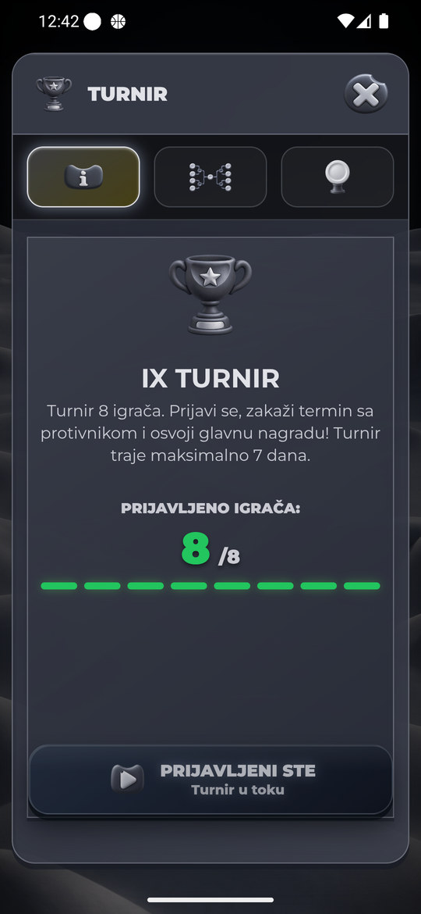
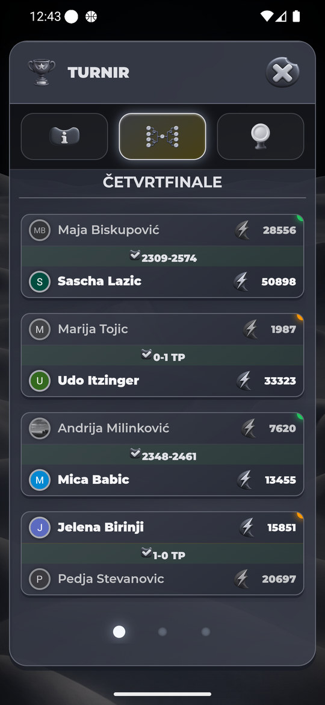
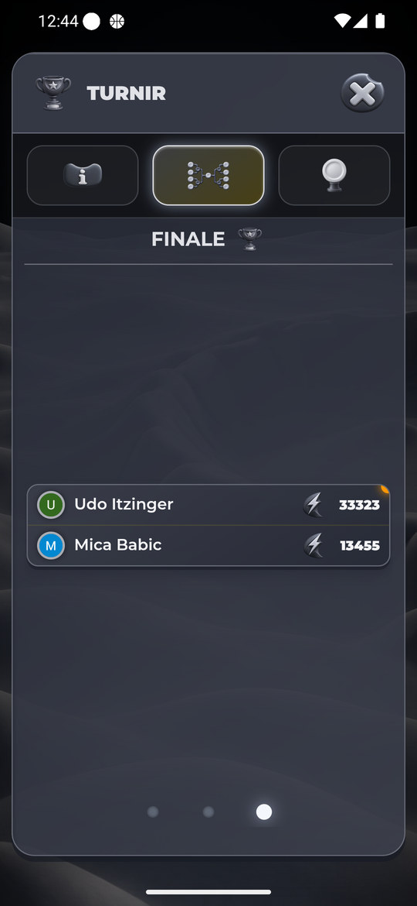
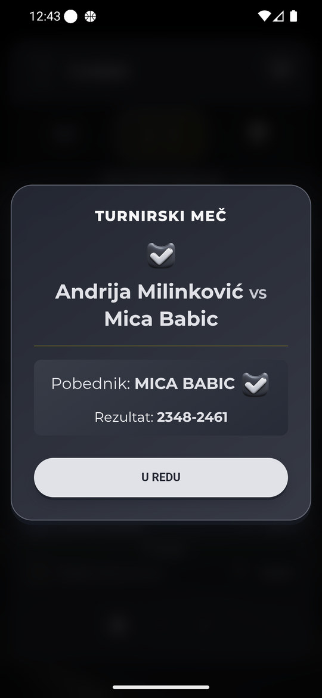

Turnir — svih deset tema, 28–29.10.
Stvarni Android emulator 360×780: u svih deset tema Info sa već prijavljenim nalogom/8 učesnika, četvrtfinale, prelazak na finale, detalj istog odigranog četvrtfinalnog meča i prve kartice Dvorane slavnih. Green dodatno polufinale i Put do titule. Intro kadrovi sačuvani za osam dodatnih tema.
Android snimci prikazuju postojeću objavljenu verziju. R21 i ranije lokalne dorade nisu commitovane niti deployovane.
Lokalne dorade koje snimci još ne potvrđuju
Kartica osvajača smešta rezultat ispod imena, uz istu širinu kartice i avatara, da rezultat ne sužava ime na nekoliko slova. Zajednička Green debljina/razmak naslova, 14px tab radius i tipografija modala. Tabovi, aktivna navigacija, popunjene prijave, statusne akcije i kartice osvajača prate površine/ink/akcent teme; uklonjeni stari Easter ljubičasti rubovi, plavi status i generička zelena/siva/zlatna podloga. Opis/oznaka prijave koriste čitljivi muted, poraženi nisu zatamnjeni opacity/filter slojem, a pobednik ostaje označen debljinom i rezultatom. Uklonjene stare zamućujuće tekstualne senke u detalju meča.
PASS: 210 izolovanih slučajeva (10 tema ×7 stanja ×320×568/360×780/412×915), stvarni TournamentManager/ModalManager i CSS sa sintetičkim turnirom. Izračunate Green mere/fontovi, safe bounds, ispravni vidljivi PNG, navigacija44/10px, dovoljno prostora za ime i paletni opis/prijava. Montserrat je deklarisan; izolovani offline test može koristiti fallback. Animacije su u fixture-u isključene radi stabilnog merenja, pa test ne meri motion ili trajanje intra.
14 turnirskih semantičkih uloga po temi: pehar, finalista, tri taba, šest stanja i tri turnirske medalje. Dukat, Indeks moći i X su deljeni kanonski identiteti iste teme. Devet tema ima dodatnu tehničku 512px room izvedenicu istog 384px pehara; Green koristi kanonski 384px PNG. To je namerni tehnički izuzetak, ne dodatni identitet. Nisu svih 14 uloga istovremeno na ekranu; medalje različitih takmičenja nisu spajane.
Granice provere
- Nije nova Android provera prijave/odjave, praznog turnira, prihvatanja pravila, zakazivanja, prihvatanja termina ili pokretanja duela. Ti tokovi nisu pokretani na nalogu.
- Dvorana slavnih prikazana je sa prvim karticama, ne sa svakom istorijskom titulom; Put do titule novim Android dokazom obuhvaćen samo u Zelenoj. Polufinale dodatno samo u Zelenoj.
- Nije sada izazvana šampionska/finalistička ceremonija ili nagradno/grešno obaveštenje; završni online ekran i stvarna isplata nisu novi Android dokaz.
- Nisu merene tačne sekunde intra, fps, hladni transfer, drugi jezik ili fizički Samsung S25.
- Nove lokalne ispravke zahtevaju korisnikov deploy i naknadnu Android potvrdu.
Zelena
Osnovni Android prolaz pregledan; R21 lokalno ispravljeno, potvrda čeka deploy.
Svetlo zlato
Osnovni Android prolaz pregledan; R21 lokalno ispravljeno, potvrda čeka deploy.
Trula višnja
Osnovni Android prolaz pregledan; R21 lokalno ispravljeno, potvrda čeka deploy.
Plavi okean
Osnovni Android prolaz pregledan; R21 lokalno ispravljeno, potvrda čeka deploy.
Neon Cyber
Osnovni Android prolaz pregledan; R21 lokalno ispravljeno, potvrda čeka deploy.
Kraljevski ametist
Osnovni Android prolaz pregledan; R21 lokalno ispravljeno, potvrda čeka deploy.
Vaskršnja
Osnovni Android prolaz pregledan; R21 lokalno ispravljeno, potvrda čeka deploy.
Pustinjsko staklo
Osnovni Android prolaz pregledan; R21 lokalno ispravljeno, potvrda čeka deploy.
Mesečev sjaj
Osnovni Android prolaz pregledan; R21 lokalno ispravljeno, potvrda čeka deploy.
Mesečev sjaj — Info / prijavljeni učesnici

Mesečev sjaj — Kostur / četvrtfinale

Mesečev sjaj — Kostur / finale

Mesečev sjaj — Detalj odigranog meča

Mesečev sjaj — Dvorana slavnih / prve kartice
Mesečev sjaj — intro, pehar sa zvezdom
Severna maglina
Osnovni Android prolaz pregledan; R21 lokalno ispravljeno, potvrda čeka deploy.
Severna maglina — Info / prijavljeni učesnici
Severna maglina — Kostur / četvrtfinale
Severna maglina — Kostur / finale
Severna maglina — Detalj odigranog meča
Severna maglina — Dvorana slavnih / prve kartice
Severna maglina — intro, pehar sa zvezdom
Dodatni dokazi
Zelena — dodatno polufinale
Zelena — dodatno Put do titule
Prelazak teme — nedostaje X dok se PNG učitava
Vraćena Zelena i originalna rezolucija
Nema nove partije, prijave/odjave sa turnira, kupovine, nagradne reklame, isplate, deljenja kartice ili slanja poruka/poziva. Otvarani su samo postojeći prikazi i zatvarani informativni modali. Automatski test interstitiali zatvoreni Android Back kontrolom bez klika na oglas. Nije bilo blokirajućeg poziva u ovom prolazu.
Zelena vraćena kroz UI. wm size/density resetovani na originalnih1440×3120/560dpi; emulator ostao otvoren i prijavljen.